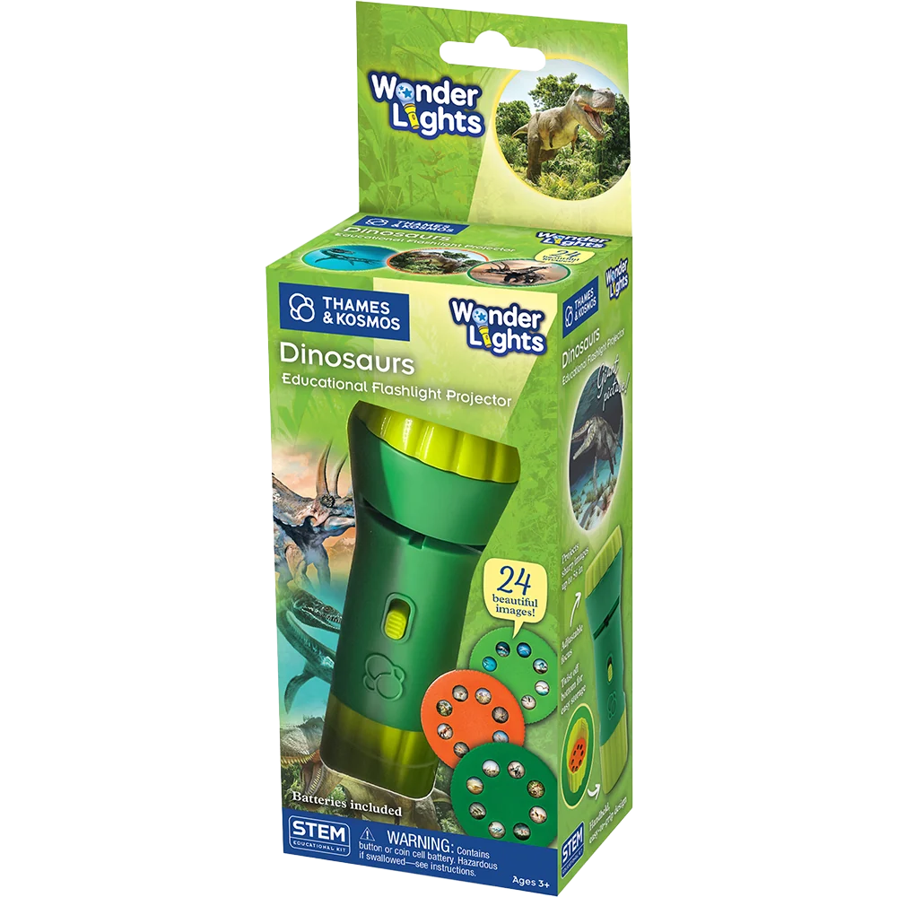

Educational Flashlight Projectors
Wonder Lights
One of my first projects at Thames and Kosmos wherein I started a new product line, the idea behind Wonder Lights was to reimagine and add more value to the classic and well-loved flashlight projector toy format. I proposed the addition of educational posters that doubled up as an instruction manual and provided a huge canvas for children to explore and learn more about each projected image, as well as a place to offer engaging prompts to reinforce the learning. During the development, the focus was also on improving the ergonomics of the product and ease of use — making the flashlight body chunkier, easy to hold for small hands and adding built-in storage for the image disks.
